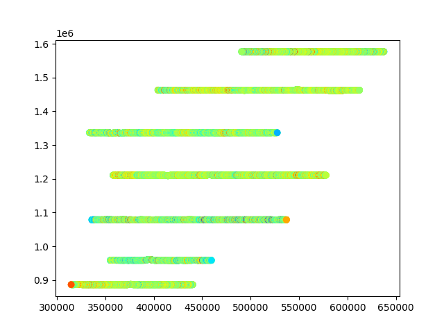
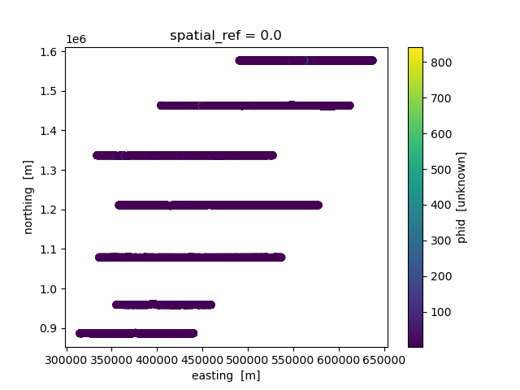

Note
Click here to download the full example code
ASEG to NetCDF conversion
Dataset Reference: Minsley, B.J., James, S.R., Bedrosian, P.A., Pace, M.D., Hoogenboom, B.E., and Burton, B.L., 2021, Airborne electromagnetic, magnetic, and radiometric survey of the Mississippi Alluvial Plain, November 2019 - March 2020: U.S. Geological Survey data release, https://doi.org/10.5066/P9E44CTQ.
import matplotlib.pyplot as plt
from os.path import join
from gspy import Survey
Convert the ASEG data to netcdf
# Path to example files
data_path = '..//supplemental//'
# Survey Metadata file
supplemental = data_path + "region//MAP//data//Tempest_survey_md.json"
# Establish survey instance
survey = Survey(supplemental)
# Define input ASEG-format data file and associated variable mapping file
d_data = data_path + 'region//MAP//data//Tempest.dat'
d_supp = data_path + 'region//MAP//data//Tempest_data_md.json'
# Read data and format as Tabular class object
survey.add_tabular(type='aseg', data_filename=d_data, metadata_file=d_supp)
# Define input ASEG-format model file and associated variable mapping file
m_data = data_path + 'region//MAP//model//Tempest_model.dat'
m_supp = data_path + 'region//MAP//model//Tempest_model_md.json'
# Read model data and format as Tabular class object
survey.add_tabular(type='aseg', data_filename=m_data, metadata_file=m_supp)
# Save NetCDF file
d_out = data_path + 'region//MAP//data//Tempest.nc'
survey.write_netcdf(d_out)
Read in the netcdf files
new_survey = Survey().read_netcdf(d_out)
Plotting
plt.figure()
new_survey.tabular[0].scatter('X_PrimaryField')
plt.figure()
new_survey.tabular[1].scatter('PhiD')
print(new_survey.tabular[0])
print(new_survey.tabular[0]['x'].attrs)
print(new_survey.tabular[0]['EMX_HPRG'])
plt.show()
- 
- 
<xarray.Tabular>
Dimensions: (gate_times: 15, nv: 2, index: 20701)
Coordinates:
spatial_ref float64 0.0
* gate_times (gate_times) timedelta64[ns] 00:00:00.000010850 ... 00:0...
* nv (nv) int64 0 1
* index (index) int32 0 1 2 3 4 5 ... 20696 20697 20698 20699 20700
x (index) float32 3.579e+05 3.579e+05 ... 4.907e+05 4.906e+05
y (index) float32 1.211e+06 1.211e+06 ... 1.577e+06 1.577e+06
z (index) float32 45.83 46.61 46.95 ... 177.0 179.4 177.2
Data variables: (12/62)
gate_times_bnds (gate_times, nv) float64 5.43e-06 1.628e-05 ... 0.01666
Line (index) int32 225401 225401 225401 ... 262001 262001 262001
Flight (index) int32 10 10 10 10 10 10 10 ... 70 70 70 70 70 70 70
Fiducial (index) float32 7.836e+03 7.836e+03 ... 1.282e+04 1.282e+04
Proj_CGG (index) int32 603756 603756 603756 ... 603756 603756 603756
Proj_Client (index) int32 9999 9999 9999 9999 ... 9999 9999 9999 9999
... ...
Z_PrimaryField (index) float32 14.69 14.53 15.06 ... 16.76 15.95 14.99
Z_VLF1 (index) float32 3.696 3.733 3.729 ... 3.732 3.734 3.71
Z_VLF2 (index) float32 3.684 3.711 3.705 ... 3.701 3.717 3.699
Z_VLF3 (index) float32 3.637 3.607 3.623 ... 3.654 3.602 3.614
Z_VLF4 (index) float32 3.567 3.576 3.621 ... 3.616 3.594 3.586
Z_Geofact (index) float32 0.9969 0.9862 1.022 ... 1.123 1.069 1.004
Attributes:
content: raw data
comment: This dataset includes minimally processed (raw) AEM data
{'axis': 'X', 'standard_name': 'projection_x_coordinate', 'null_value': -99999.99, 'units': 'm', 'format': 'f13.2', 'grid_mapping': 'spatial_ref', 'valid_range': array([314693.4, 637683.6], dtype=float32), 'long_name': 'Easting_Albers'}
<xarray.DataArray 'EMX_HPRG' (index: 20701, gate_times: 15)>
array([[8.332362e+00, 7.280147e+00, 6.473992e+00, ..., 6.004300e-02,
1.536800e-02, 3.555000e-03],
[8.243627e+00, 7.149599e+00, 6.380865e+00, ..., 6.239400e-02,
1.621100e-02, 3.524000e-03],
[8.175116e+00, 7.172604e+00, 6.367391e+00, ..., 6.274400e-02,
1.748400e-02, 3.237000e-03],
...,
[3.610122e+00, 1.749984e+00, 9.285520e-01, ..., 1.661000e-03,
4.280000e-03, 9.956000e-03],
[3.340961e+00, 1.569131e+00, 8.276930e-01, ..., 2.557000e-03,
5.719000e-03, 1.101400e-02],
[3.302240e+00, 1.456013e+00, 7.967810e-01, ..., 3.049000e-03,
6.414000e-03, 1.042900e-02]])
Coordinates:
spatial_ref float64 0.0
* gate_times (gate_times) timedelta64[ns] 00:00:00.000010850 ... 00:00:00...
* index (index) int32 0 1 2 3 4 5 ... 20696 20697 20698 20699 20700
x (index) float32 3.579e+05 3.579e+05 ... 4.907e+05 4.906e+05
y (index) float32 1.211e+06 1.211e+06 ... 1.577e+06 1.577e+06
z (index) float32 45.83 46.61 46.95 46.66 ... 177.0 179.4 177.2
Attributes:
em_system_components: 1
standard_name: emx_hprg
null_value: -999.999999
units: fT
format: 15f12.6
grid_mapping: spatial_ref
valid_range: [-2.606593 27.079742]
long_name: HPRG Corrected EMX Windows
Total running time of the script: ( 0 minutes 2.193 seconds)